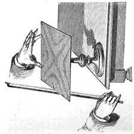
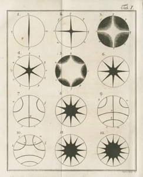
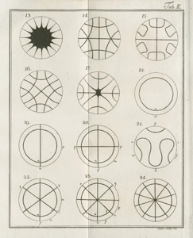
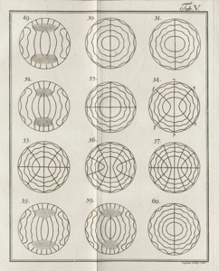
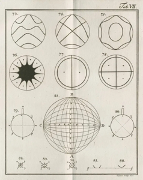
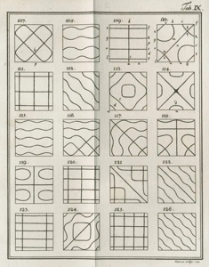
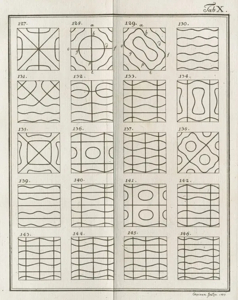
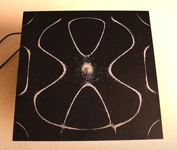
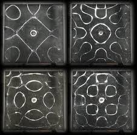

1787 · Sound made visible
Chladni's Plates
Metal plates sprinkled with sand and vibrated at specific frequencies. The sand collects along "nodal lines," producing stable geometric patterns now called Chladni figures — first systematically described by Ernst Chladni in 1787.
The conceptual ancestor of every cymatic image in Limen, and a working empirical demonstration that frequency creates geometry. See the bibliography entry under The anomalous evidence.

What Chladni did in 1787
In 1787 Ernst Florens Friedrich Chladni published Entdeckungen über die Theorie des Klanges ("Discoveries in the Theory of Sound"), where he presented a repeatable technique for visualizing vibrational modes of rigid plates. He is often called the father of acoustics because this work provided some of the first clear experimental evidence that sound involves wave-like vibrations in material media.
Chladni built on earlier, more qualitative observations by Robert Hooke, who had noticed patterns in flour on vibrating glass, but Chladni systematized the method and documented many configurations. His 1787 treatise included engraved plates with over a hundred distinct patterns — what we now call Chladni figures.
How the plates and figures work
A Chladni plate is typically a flat metal sheet (often square or circular) clamped at the center and excited either with a violin bow at the edge or a loudspeaker. The plate vibrates in standing-wave modes; along certain curves (nodal lines) the plate is essentially still, while other regions oscillate up and down.
When the surface is lightly covered with fine sand, the grains are shaken away from regions of high motion and settle into the nodal lines, tracing out the mode structure as visible patterns. Different excitation frequencies produce different sets of nodal lines, yielding increasingly intricate symmetric figures that encode the underlying eigenmodes of the elastic plate.
The 1787 engravings
Chladni published these engraved figures as part of his treatise — over a hundred patterns across multiple tables, each corresponding to a distinct vibrational mode of a circular or square plate.






Scientific significance
Chladni's figures gave experimental access to the mathematics of vibrating continua, anticipated by work from Euler and Bernoulli on rods and strings. Chladni went further by deriving what is now called Chladni's law, relating the frequencies of vibrational modes of flat circular plates to integers indexing those modes. This was a key step in connecting observed acoustic patterns with quantitative wave theory.
His technique became a practical tool for instrument makers: by examining the nodal patterns on the front and back plates of violins and similar instruments, luthiers could carve and adjust wood to optimize resonance and tonal quality. Modern acoustics still uses variants of his method, though loudspeakers and digital analysis have replaced bows and hand-drawn engravings.

Broader context and legacy
Beyond acoustics, Chladni also did foundational work on meteorites, arguing from eyewitness accounts and physical evidence that some stones must originate from outer space. In public demonstrations across Europe he combined scientific explanation with musical performance, using his plates and custom instruments (like the euphone and clavicylinder) to make sound and its structure directly visible and audible.
Today Chladni plates appear both in physics education and in art/installation work, since the patterns sit at the intersection of wave mechanics, symmetry, and aesthetic form. For someone working at the interface of consciousness and perception, they are a clean example of how physical wave phenomena can be "lifted" into structured, quasi-symbolic visual forms via relatively simple transduction mechanisms.

Cymatics in motion
Engravings are static; the patterns themselves are not. The video below shows a Chladni plate running through a sequence of frequencies — sand assembling itself into one nodal geometry, dissolving, and reassembling into the next as the driving frequency climbs. Each timestamp button jumps to a different mode.
Video: Chladni plate demonstration · embedded for educational reference, not hosted on this site.
Chladni's plates are referenced in the Limen antenna model and in Numen's chord scene as a working empirical demonstration that frequency creates geometry — the conceptual ancestor of every cymatic image in the field framework.
← Reading & References